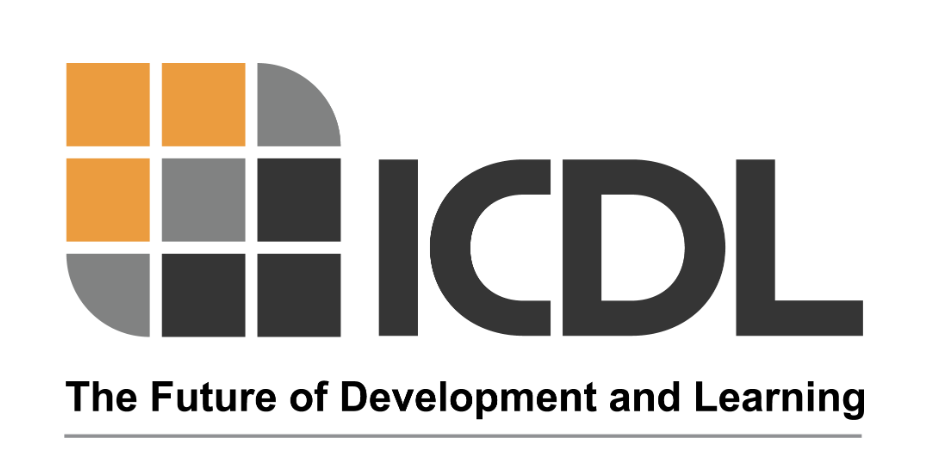

Uyguladığım Terapi Yöntemleri
Bilimsel temelli, kanıta dayalı terapi yaklaşımları ile çocuklarınıza destek oluyorum.
Prompts for Restructuring Oral Muscular Phonetic Targets
PROMPT Yöntemi Nedir?
PROMPT (Prompts for Restructuring Oral Muscular Phonetic Targets), dokunsal, kinestetik ve proprioseptif uyaranlar kullanılarak uygulanan, motor konuşmayı desteklemeye yönelik bilimsel temelli bir terapi yaklaşımıdır.
Bu yöntemin en önemli özelliği, bireyin yalnızca ses üretimine değil, işlevsel iletişim becerilerinin tamamına odaklanmasıdır.
Nasıl Uygulanır?
PROMPT yaklaşımında her birey bütüncül olarak değerlendirilir. Bu süreçte:
- Konuşma üretimi
- Dil gelişimi
- Bilişsel beceriler
- Sosyal ve duygusal ihtiyaçlar
dikkate alınarak tamamen bireye özel bir terapi planı oluşturulur. Bireyin en çok zorlandığı alanlar belirlenir ve terapi hedefleri bu doğrultuda planlanır. Bu hedefler; fiziksel, dilsel, bilişsel ve sosyal-duygusal alanları kapsayabilir.
Terapi Süreci Nasıl İlerler?
Terapi sürecinde, bireyin günlük yaşamında anlamlı olan aktiviteler kullanılır. Bu aktivitelerin içine, motor konuşma hedeflerini destekleyen sözcükler yerleştirilerek çalışılır. Bu sayede birey, öğrendiği becerileri yalnızca terapi ortamında değil, günlük yaşam içinde de kullanmayı öğrenir.
Kimler İçin Uygundur?
PROMPT yöntemi, bireyselleştirilmiş yapısı sayesinde birçok farklı durumda uygulanabilir:
- Konuşma sesi bozuklukları
- Motor konuşma bozuklukları (apraksi vb.)
- Gecikmiş dil ve konuşma
- Dil ve iletişim güçlükleri
- Otizm spektrum bozukluğu
PROMPT Klinisyeni Olarak Yaklaşımım
Bir PROMPT klinisyeni olarak, bu yöntemi uygulamak için gerekli eğitimleri tamamlamış bir Dil ve Konuşma Terapisti olarak hizmet vermekteyim. PROMPT yaklaşımı, özel eğitim gerektiren bir yöntemdir ve yalnızca bu alanda eğitim almış dil ve konuşma terapistleri tarafından uygulanabilir.
Terapi sürecinde amacım:
- Çocuğun kendini daha anlaşılır ve rahat ifade edebilmesini sağlamak
- Aileyi sürece aktif olarak dahil etmek
- Kazanılan becerilerin günlük yaşama genellenmesini desteklemek
- Her seansı, çocuğun hem keyif alacağı hem de aktif iletişim kuracağı şekilde planlamak
Developmental, Individual-Difference, Relationship-Based Model

DIR® FLOORTIME Nedir?
DIR® FLOORTIME, çocuğun gelişimsel sürecini, bireysel farklılıklarını ve ilişki kurma becerilerini merkeze alan, oyun temelli bir müdahale yaklaşımıdır. Dr. Stanley Greenspan ve Dr. Serena Wieder tarafından geliştirilen bu model, çocuğun duygusal ve sosyal gelişimini destekleyerek iletişim becerilerini güçlendirir.
Floortime, kelimenin tam anlamıyla "yerde geçirilen zaman" demektir. Terapi, çocuğun seviyesine inerek, onun ilgi alanlarından yola çıkarak ve onun liderliğini takip ederek gerçekleştirilir. Bu yaklaşım özellikle otizm spektrum bozukluğu, gelişimsel gecikmeler ve iletişim zorlukları yaşayan çocuklar için son derece etkilidir.
DIR® FLOORTIME'ın Üç Ana Bileşeni
- D (Developmental): Çocuğun gelişimsel kapasitelerini anlamak ve desteklemek
- I (Individual Differences): Her çocuğun bireysel özelliklerini, güçlü ve zayıf yönlerini dikkate almak
- R (Relationship-Based): Duygusal bağ ve ilişki kurma üzerinden öğrenmeyi desteklemek
Gelişimsel Kapasiteler (FEDCs)
DIR® FLOORTIME modeli, çocukların 6 temel gelişimsel kapasiteyi (Functional Emotional Developmental Capacities - FEDCs) sırayla kazanmasını hedefler:
- 1. Sakin kalabilmek ve dikkatini verebilmek
- 2. Karşısındaki ile ortak ilgi kurabilmek ve sürdürmek
- 3. Duygusal ve sosyal mesaj içeren her türlü iletişim sinyallerini alabilmek ve gönderebilmek
- 4. Karşısındaki kişi ile birlikte, belli bir düşünce doğrultusunda davranışlarını organize edebilmek ve birlikte problem çözebilmek
- 5. Karşısındaki ile birlikte sembolik ve yaratıcı oyun oynamak, düşünceler arasında köprü kurarak ilişkilendirmek
- 6. Mantıklı düşünce geliştirmek
DIR® FLOORTIME Kimler İçin Uygundur?
DIR® FLOORTIME yaklaşımı özellikle şu durumlar için etkili bir terapi yöntemidir:
- Otizm spektrum bozukluğu
- Gelişimsel gecikmeler
- Dil ve iletişim gecikmesi
- Sosyal etkileşim zorlukları
- Oyun becerilerinde zorluklar
- Duygusal düzenleme güçlükleri
Terapide DIR® FLOORTIME Nasıl Uygulanır?
Floortime seanslarında terapist, çocuğun fiziksel seviyesine iner ve onun oyun dünyasına katılır. Çocuğun ne yaptığını gözlemler, onun ilgi alanlarını takip eder ve bu ilgi alanları üzerinden iletişimi genişletmeye çalışır.
Terapi sürecinde direktif vermek yerine, çocuğun doğal motivasyonu ve merakı kullanılır. Oyun içinde küçük "zorluklarla" çocuk problem çözmeye teşvik edilir. Böylece çocuk, aktif bir katılımcı olarak iletişim becerilerini, sosyal etkileşimini ve duygusal düzenlemesini geliştirir.
Aile katılımı DIR® FLOORTIME'ın en önemli parçasıdır. Ebeveynler, günlük rutinlerde ve oyun zamanlarında Floortime prensiplerini uygulayarak çocuklarının gelişimini destekler.